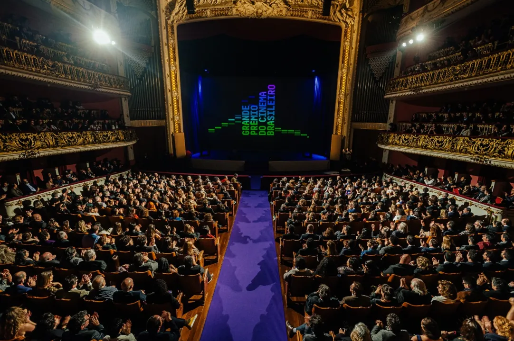
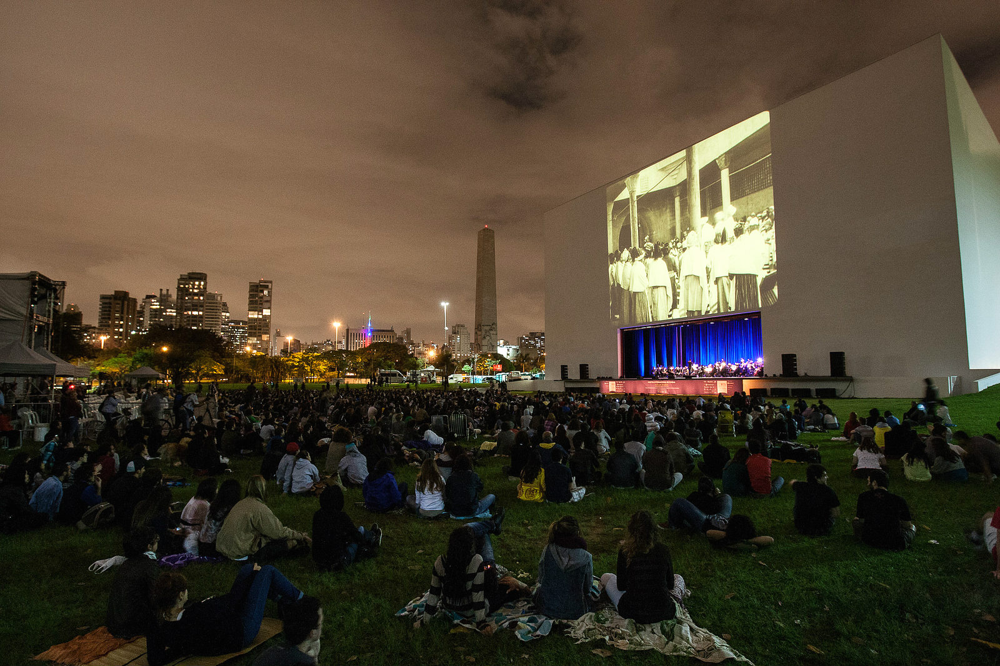

No Brasil também existem premiações que valorizam o cinema nacional e exaltam isso com sua importância, dando prêmios. A seguir você pode ver alguns dos principais prêmios brasileiros.
1 - Grande Prêmio do Cinema Brasileiro
ou Prêmio Grande Otelo do Cinema Brasileiro
Considerado o "Oscar brasileiro," é a principal premiação do cinema nacional, organizada pela Academia Brasileira de Cinema. Criada em 2000, celebra o melhor das produções cinematográficas do Brasil, incluindo categorias como melhor filme, direção, atuação e roteiro. O evento também destaca curtas-metragens, documentários e filmes estrangeiros.

2 - Festival de Cinema de Gramado
Um dos festivais mais antigos e prestigiados do Brasil, realizado anualmente na cidade de Gramado, no Rio Grande do Sul, desde 1973. O festival entrega o Kikito de Ouro, um dos troféus mais cobiçados do cinema nacional. Ele também inclui produções latino-americanas, destacando a integração cultural da região.
3 - Mostra Internacional de Cinema de São Paulo
Apesar de ser mais focada em exibição do que em premiação, a Mostra de São Paulo entrega prêmios importantes como o Prêmio do Público e o Prêmio da Crítica, reconhecendo os filmes mais aclamados durante o evento. A Mostra é uma vitrine de cinema brasileiro e internacional.

4 - Cine PE - Festival do Audiovisual
Realizado em Recife, é um dos mais tradicionais eventos cinematográficos do Brasil, com um foco especial no cinema regional e nacional. Os melhores filmes recebem o troféu Calunga, premiando categorias como direção, roteiro e atuação.
5 - Festival de Brasília do Cinema Brasileiro
Fundado em 1965, é um dos festivais mais importantes e pioneiros do Brasil. Realizado na capital do país, o festival é conhecido por seu foco em filmes de forte conteúdo social e político. Os vencedores recebem o Troféu Candango, uma das maiores honrarias do cinema nacional.
6 - Prêmio Sesc de Cinema
Organizado pelo Serviço Social do Comércio (Sesc), este prêmio foca em produções independentes, incentivando novos talentos e promovendo o acesso à cultura cinematográfica. É uma plataforma importante para realizadores emergentes no Brasil.
7 - Anima Mundi
Embora especializado em animação, o Anima Mundi é uma das premiações mais respeitadas no Brasil e no mundo para produções animadas. Ele destaca o talento brasileiro em animações curtas e longas, promovendo o gênero dentro e fora do país.